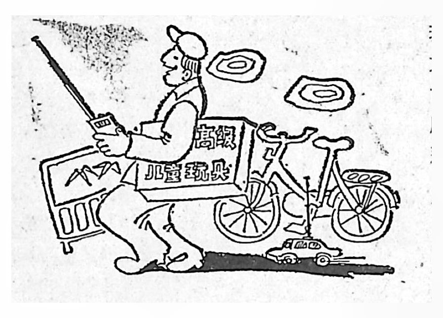

佚名 《人事》1988年第8期（总第35期），第48页
圈（插图）
Circles (illustration)
- Text in the drawing
- 高级儿童玩具
Deluxe children's toys - Passage illustrated
路过里间时，随意瞧了一下，便发现原先只有两张童床的地方现在增加到三张。走近前去细看，不错，“骆驼牌”真是我从这里拿走的那张……
Passing the inner room I happened to glance in, and saw that where there had been two children's cots there were now three. I went closer to look: no doubt about it, the “Camel brand” cot was the very one I had taken away from here…From the short story 圈 (“Circles”) by Chen Xisheng, on the same page. 陈锡盛《圈》（小说），同页
- Description
- Illustration for the story: a grinning man strides along laden with gifts — a television, a big box of deluxe children's toys, a bicycle and a toy car — waving the aerial of a remote control.
- Note
- In the story, an old classmate newly made head of a personnel section receives a stream of gifts for his new baby, including three children's cots; he passes one cot on to the narrator, who passes it on to his own brother-in-law — and it ends up back in the section chief's house as a gift from the brother-in-law's bride, who wants a transfer.
- Artist
- Unattributed 佚名
- Published in
- 《人事》1988年第8期（总第35期）, p. 48
- Themes
- Gifts and banquets · Connections (guanxi) · Story illustrations

Cite
Unattributed, “圈（插图）” [Circles (illustration)], Renshi (Personnel) 《人事》, 1988, no. 8, p. 48.